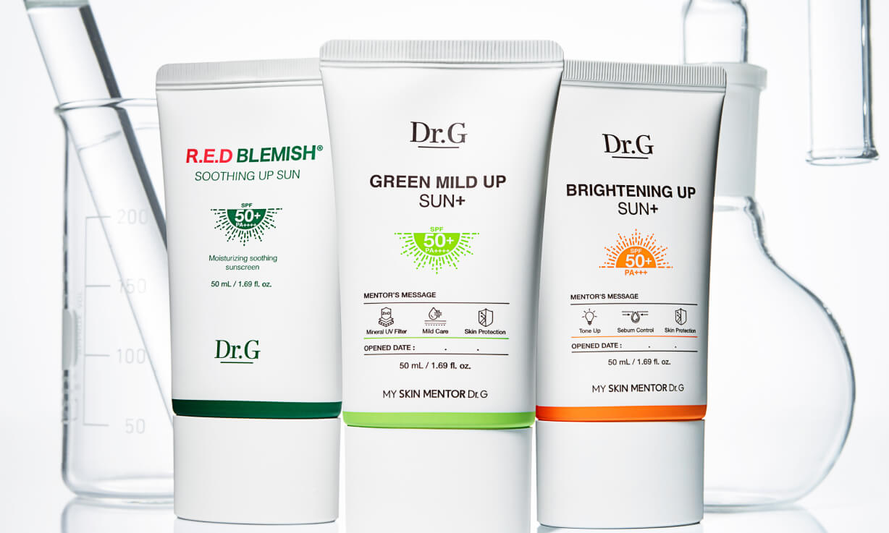
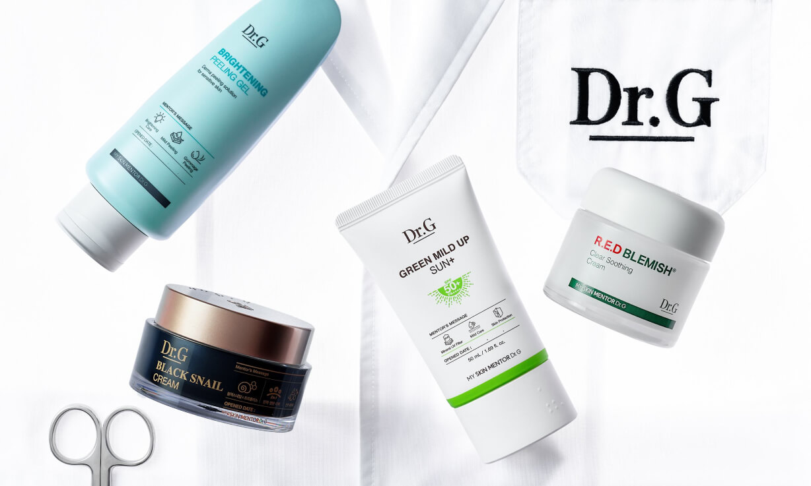
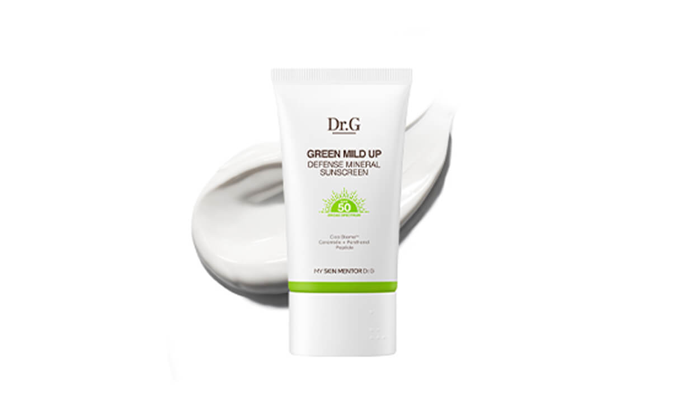
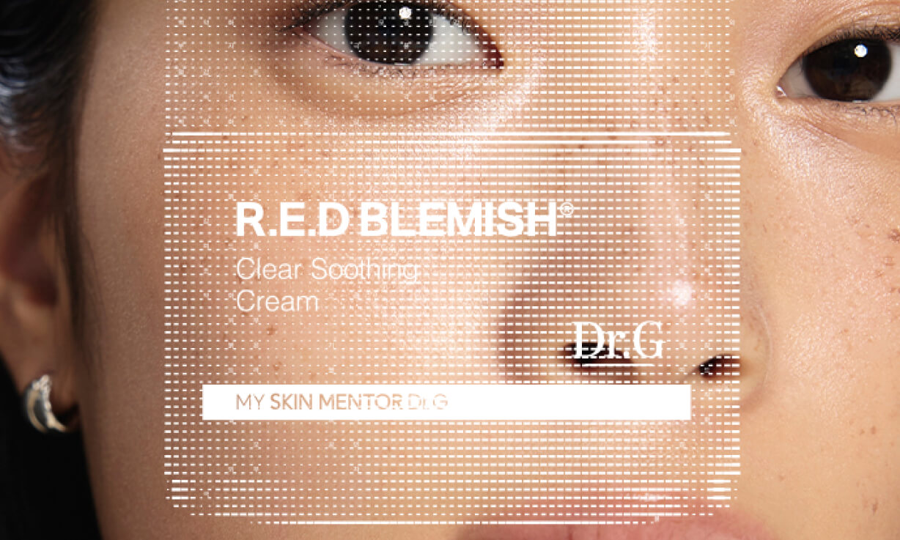

클리닉에서 태어난 피부과 아름다운 피부를 위한 3스텝 케어
믿을 수 있습니다 - 아름다운 피부를 위한 전문적인 스킨케어 조언을 제공합니다
기사 읽기대한민국 피부과 전문의 안건영 원장이 설립한
닥터지는 신뢰할 수 있는 과학 중심의 성능을 제공합니다.
아름다운 피부를 위한 전문 스킨케어 조언을 드립니다.

믿을 수 있습니다 - 아름다운 피부를 위한 전문적인 스킨케어 조언을 제공합니다
기사 읽기



